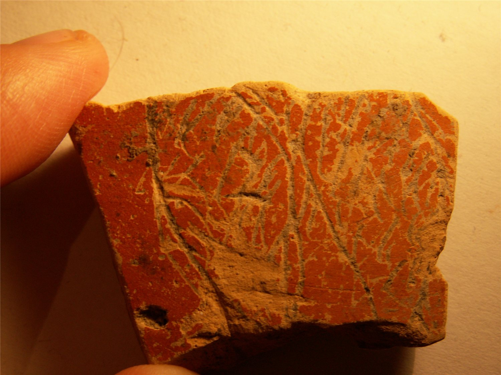

pompelo-006-antropomorfo
Grafito figurativo (figura antropomorfa (parte superior de las piernas)) sobre cerámica común barnizada (Pompelo, Plaza del Castillo, Pamplona, Navarra)
Pompelo (Pamplona, Navarra), Hispania citerior · s. II-III d.C.

Texto
Figura antropomorfa (parte superior de las piernas)
Comentario
No se conocen paralelos de grafitos de figuras antropomorfas sobre cerámica con el nivel de detalle de este. Sería del mismo tipo que otros diseños en soporte parietal aparecidos en Pompeya, Herculano o Roma.
Descripción
- Soporte
- Fragmento de la parte inferior de la pared de cerámica común barnizada, que corresponde a un jarro de borde moldurado. Pasta rosa y barniz naranja solo al exterior.
- Disposición
- Localización del grafito: Pared exterior de la pieza.
- Descripción del grafito
- Fragmento de grafito. El dibujo parece incluir dos elementos paralelos, cuyo interior está completado con diferentes trazos. Por otros paralelos se propone que se trate de la parte superior de las piernas de una figura antropomorfa.
- Datación
- s. II-III d.C.
- Lugar de origen
- Pompelo (Pamplona, Navarra), Hispania citerior
- Hallazgo
- Excavación de la Plaza del Castillo de Pamplona (2001-2003), sector 2/3. Según el contexto general de la excavación, las piezas aparecieron en un barrio artesanal. Los estratos están revueltos y no hay estratigrafía válida para fechar las piezas: la datación se basa en las formas cerámicas.
- Ubicación actual
- Almacén de Arqueología del Gobierno de Navarra
Bibliografía
- P. Ozcáriz Gil; M. Unzu, «Grafitos figurativos, palmas, tridentes y otros signos en cerámica romana de la Plaza del Castillo de Pamplona», Príncipe de Viana 253 (2011), pp. 79-95.